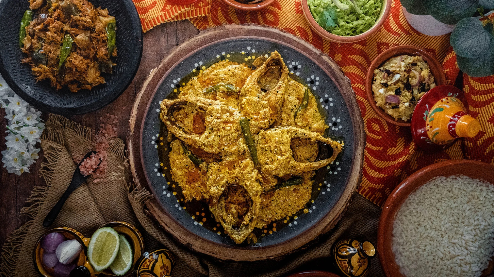

Home
Shorshe Elish

Description
The most beloved way to prepare Ilish fish,
where the richness of the fish is balanced by a sharp, creamy mustard seed gravy.
Ingredients
- Hilsa fish steaks
- Yellow and black mustard seed paste
- Turmeric
- Green chilies
- Raw mustard oil
steps
- Prepare the Mustard Paste: Grind yellow and black mustard seeds with a pinch
of salt and two green chilies into a smooth paste. Adding the chilies prevents the
mustard from turning bitter.
- Marinate the Fish: Lightly rub the Hilsa steaks with salt and turmeric powder.
- Temper the Oil: Heat mustard oil in a pan until it smokes slightly. Lower the heat
and add nigella seeds (kalo jeera) and split green chilies.
- Simmer: Mix the mustard paste with a little water and pour it into the pan.
Bring it to a gentle simmer.
- Cook the Fish: Carefully slide the fish steaks into the gravy. Cover and cook
for about 5–7 minutes on each side.
- Finish: Drizzle a tablespoon of raw mustard oil over the top right before
turning off the heat for that authentic sharp aroma.